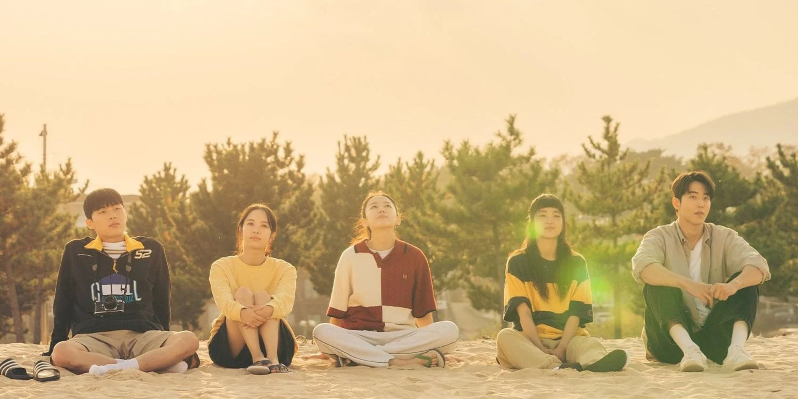
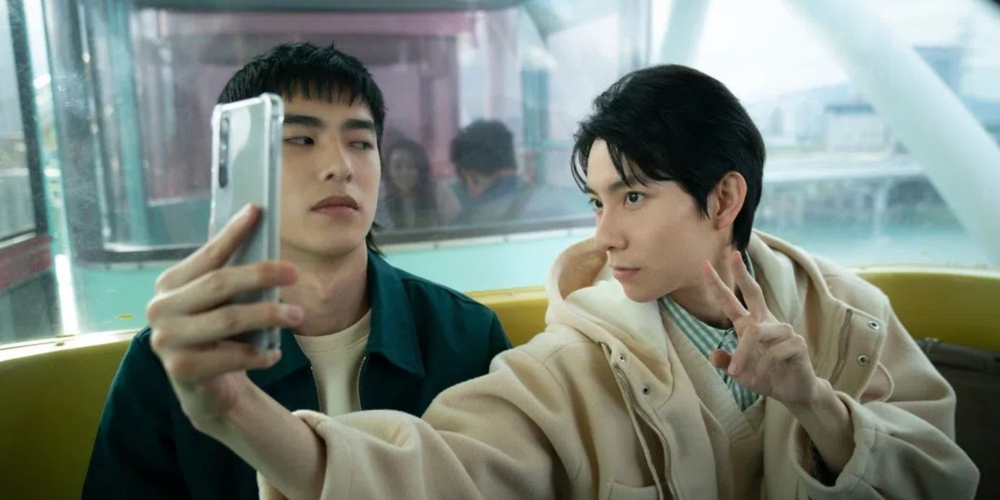
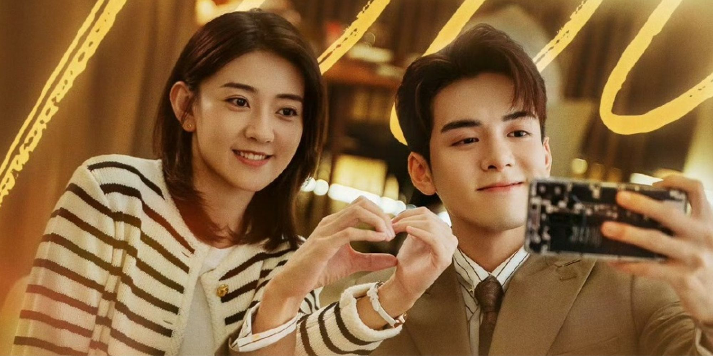
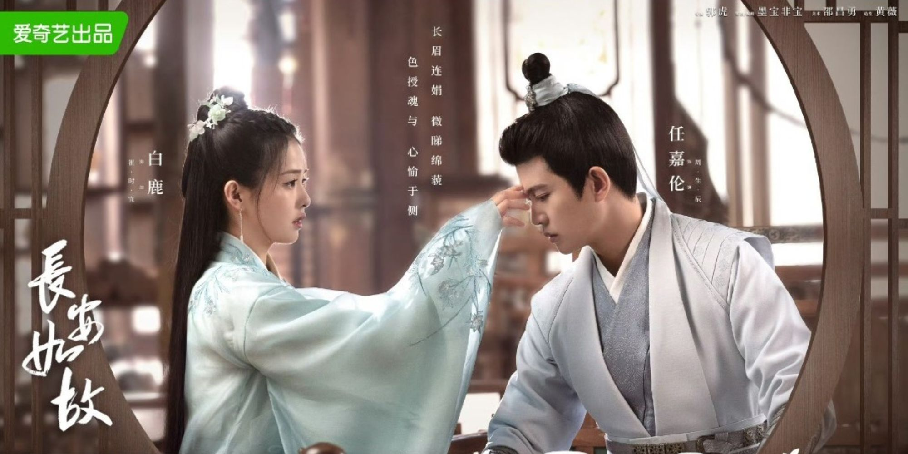

New
《二十五，二十一》
「喧鬧的友情與炙熱的愛情，因為那些短暫的瞬間，才能讓漫長人生發光發熱。」
《二十五，二十一》由《請輸入檢索詞WWW》的鄭智炫導演與權度銀編劇合作打造，這部劇由金泰梨、南柱赫、苞娜、崔顯旭、李宙明主演。它是一部非常青春的作品，卻帶著成長痛，很真實也很殘酷。如果要我說一句話來代表這部作品，那可能是「近看是一部喜劇，但遠看卻是悲劇」。
短短幾個月的追劇時光，卻好似延長到了四季。我多麼想身邊有一個可愛到不行又積極向上的希度。我也希望在十八、十九歲的年華裡，能有個陪我一起奔跑的五人幫。我更殷切期盼著在那個二十歲的時光裡，若因憂傷而不再展顏歡笑，是否也有人將我拉進夏天？
《二十五，二十一》，它帶來的感動是真，我們有淚也有笑的參與了他們的整個青春，那瞬間我知道了什麼叫永恆。作品融合親情、友情、愛情，將每個部分都襯托得很好。作品年代聚焦在動盪的1998年，劇情結合歷史事件發展，讓作品內容更貼近現實，讓人產生共鳴。「復古與懷舊」這兩個詞可以來形容這部作品，如果你感興趣的話，不妨打開觀賞2022年最熱門的韓劇之一《二十五，二十一》吧。
作品評分：8.5/10
作品年份：2022

New
《不良執念清除師》
《不良執念清除師》不只是獲得意外能力的主角和警察聯手的破案故事，也不單單是一個奇幻台劇。在主角不斷消除人的執念的同時，也慢慢的與自己和解。
《不良執念清除師》是編導合一的一部作品，看得出來林冠慧編劇是很關心生活上細節的人，由小見大，包括：人行道、仕女紋身、櫥窗娃娃，其實都是我們生活上有機會看到或著接觸到的，從細節中延伸，用不那麼死板、生硬的方式，說思念這件事、說嫉妒這件事，具象化一個我們很難用言語去表達的情感。
在這個作品裡點出一個問題，當你有能力做些改變時，你會選擇獨善其身？還是兼善天下？
男主角蒲一永在意外發生過後，能看得到常人看不見的東西，他其實可以選擇忽視，但他選擇了放手一搏，去試試看，找尋線索，幫助他們。他或許智商沒那麼高，但卻依然試著組織自己的語言，來慰藉他人，他既善良，也很勇敢。我想這就是《不良執念清除師》所想要傳遞的其中一種溫暖吧，很感謝林冠慧導演寫出一個這麼有血有肉的角色。所以第59屆金鐘獎林冠慧編劇榮獲「戲劇節目編劇獎」，真的是實至名歸。
「現在網速慢一點，手機慢一點大家都受不了，誰還給你永字八法。」帶有自身獨特幽默感的一部作品，幾乎都有戳中我的笑點，包括在人物對話中間，用適當的停頓，展現角色無言的狀態，我很喜歡，這是作品特別的地方，也是我推薦這部的一個理由。如果問我近幾年台劇我最推薦哪部？那肯定是回答：「《不良執念清除師》！！！」
作品評分：8/10
作品年份：2023

《我可能遇到了救星》
再也不是等待白馬王子來拯救，我可能遇到了救星反轉了主客體之間的關係，在其中打破傳統刻板印象，也不強調在經濟地位上的男強女弱，最終它想告訴我們，即使沒有屬於我們的陸昭西，我們也可以做一回葉時藍，成為自己的救星。
女主角葉時藍是安星醫院的兒科醫生，因為一些原因被調到桃源村做醫療援助，但遲遲回不去安星醫院，某一天，在桃源村遇到了在天候不佳落難的男主角陸昭西，沒想到陸昭西是安星醫院的院長，與葉時藍坦白之後，她不信，認為陸昭西是賣藥酒的，接下來，就各種勒索似的讓陸昭西欠一大堆債。
葉時藍從桃源村調回醫院之後，大家肯定會想男主角會各種報復女主角，之後在過程中產生愛意，然後兩人墜入愛河，這也是我以為的，所謂熟悉的套路。但編劇就是喜歡在老套的戲劇框架中找到新意，男主沒有因為在桃源村不太愉快的經歷而記恨女主，比起報復的心裡，想逗女主的小心思更為強烈，看她慌張的反應，不會刻意刁難女主，讓她難堪。
整體追起來舒服、流暢，該工作就認真的工作，該談戀愛時就好好談戀愛，並沒有混為一談。劇情發展合理不會有什麼過於無腦的片段，而且加深男女主角情感的互動不會令人尷尬，也不會有油膩膩的台詞，一切都很自然。除了音效本身就是我非常喜歡的風格之外，我特別喜歡這部的原因是其中的價值觀還有男女主的角色設定。西蘭花cp相處的日常也令人嚮往，相愛前的彼此吸引，相愛後的彼此成長，不會吝嗇講情話，甜到會蛀牙、可愛到發瘋的cp入坑不虧啊。
作品評分：8/10
作品年份：2022
《Run On》
《Run On》講述的是國家田徑代表隊的王牌運動員男主奇善謙與字幕翻譯師女主吳薇朱相遇的故事。字幕翻譯師是多數的戲劇裡難以被看到以及寫進劇本裡的角色，難得在2022年能看到如此別出心裁的韓劇，也是推薦此部劇的其中一個原因，第二，吳薇朱的角色設定放在2024年眾多戲劇角色也是很特別的，我在追劇將近十年的時間，幾乎沒有看到過哪部電視劇將「在愛別人之前，要好好愛自己、照顧自己」當作主要傳遞的核心，但這部《Run On》卻把這點當作主軸以及角色的信念，我覺得真的很棒。
劇名乍看之下是一部陳腔濫調的愛情題材，但事實相反，台詞具有新意，看似不搭嘎的對話，拼湊在一起卻是恰到好處，《Run On》不管從整個結構到台詞我覺得幾乎沒辦法挑出什麼大毛病，也沒有爛尾，反而收的不錯。
我想《Run On》能在2020年眾多好作品中脫穎而出，成為觀眾們大力推薦的冷門韓劇，可以說是看過的人都說好看，我也曾成功推薦別人入坑這部呢！無疑是因為它清新脫俗、不做作，當年從韓劇熱門《Penthouse》、《驅魔麵館》還有緊接著開播的《Sweet Home》這些較重口味、沈重、熱血題材凸顯出來，給了Run On一些優勢。2024年正值年末，非常適合推薦給剛看完比較刺激、沉重題材的朋友們，輕鬆療癒的氛圍一定能鎮住你的心。
作品評分：8/10
作品年份：2020

《周生如故》
「世間千百情，人人皆不同。」
醉臥白骨灘，放意且狂歌，一匹馬，一壺酒，世上如王有幾人。」
男主小南辰王周生辰與女主漼氏獨生女漼時宜相遇的故事，如果喜歡看虐劇的朋友，應該大部分都知道這部，在網路文章盤點虐劇有哪幾部時，《周生如故》幾乎榜上有名，劇中的國家大義讓周生辰漼時宜兒女私情成為時代下的犧牲品，劇情的鋪陳以及畫面的質感、演員的演技都非常不錯，非常推薦給還沒看過這部劇的朋友。
當時看完《周生如故》有了許多的遺憾，正是遺憾，所以才更令人感傷，令人難以忘懷吧。至今仍然沒辦法再看一次，因為太虐了，之前點開一次，但看了十幾分鐘就關掉了。
劇中無一字一句說愛，卻無時無刻透露出愛，一顰一笑，一動一靜，刻在骨裡的溫柔，寫在臉上的疼惜，是他對她的柔情。《周生如故》裡的周生辰與漼時宜，有的是淡淡的美好，心意相通，早已無需言語，我想這才是情感上的最高境界，他們是家人、是朋友，也是彼此心上的人，是心靈上的依靠，單是一句我懂你，就勝過人世間千萬種情。
《周生如故》是需要靜下心來看的，相對於其他古裝劇來說步調慢的，但不枯燥乏味，反而能從細節中，看到魅力所在，一個場景足以讓人駐足已久，一個回眸的瞬間，足以讓人心動萬分，可以說是文藝感十足。《周生如故》是需要靜下心來看的，相對於其他古裝來說步調慢的，但不枯燥乏味，反而能從細節中，看到魅力所在，一個場景足以讓人駐足已久，一個回眸的瞬間，足以讓人心動萬分，可以說是文藝感十足。
作品評分：9/10
作品年份：2021
《一閃一閃亮星星》
「 每一個珍藏在心底的秘密，都會變成一顆閃亮的星星。」
劇情講述一個大大咧咧的女孩在結婚前夕男友劈腿，在失意之時，意外穿越回到高中時期，卻發現在無數個日夜裡，原來有個一直默默守護她的男孩，最後收穫了友誼，也改變了她對於自己人生的態度。
「 也許遺憾才是世間最常有的事情吧，不論我如何加快步伐向你奔去，但還是偏離了航線。」
戲劇的美好在於，遺憾可以彌補。在循環的時空裡，所有的事情都存在著「變數」，只有張萬森喜歡林北星是「 定數 」。雨水打在傘上的聲音，如同我心跳的頻率，戴上同一副耳機，向你微微靠近，連動作都可以看出張萬森對林北星的愛意。坐在腳踏車後座的我，配著藍天白雲，小心翼翼的抓住你的衣服，透露出微微的欣喜。
《一閃一閃亮星星》張萬森這個角色太鮮明了，加上本身演員的詮釋，使角色更加鮮活。愛意是面對自己喜歡的人是藏不住的，屈楚蕭把小心翼翼卻又充滿愛的感覺抓得很到位，甚至是一些小表情、小動作，都會發現他將角色了解得很透徹。一個人獨自的開心，一個人獨自的難過，張萬森就是這種的存在，網評「暗戀天花板」真的不為過。關於暗戀的劇有很多，但能做到將角色刻畫這麼鮮明且令人心疼的劇少之又少。
《一閃一閃亮星星》也不是單純在說暗戀，它其實也是在紀錄一個找尋自我的過程。在女主林北星身上可以看出穿越前後的變化，後來她才知道原來她的旁若無人、盲目追求，都讓她迷失在自己的世界裡，最後丟失自己。原來愛一個人，要先找到自己。
看這部的時候，跟當時我看《原來我很愛你》的心情是差不多的，同樣都是寶藏劇，沒有什麼很大的宣傳，卻靠著口碑走出自己的一條路。不是劇情需要多甜才能吸引觀眾，而是如何與觀眾有共鳴，讓我們能與角色一同體會那些喜怒哀樂。《一閃一閃亮星星》整部的色調還有畫面感我都很喜歡，ost也是打動我的一個地方，個人最喜歡《全世界在你身後》這首歌。劇情前面走得偏慢，這部是有越來越好看的趨勢，甜虐甜虐的劇情對我來說剛剛好。入坑不虧啊，看完真的想要直接告白張萬森，喜歡的朋友快去看看。
作品評分：7/10
作品年份：2022